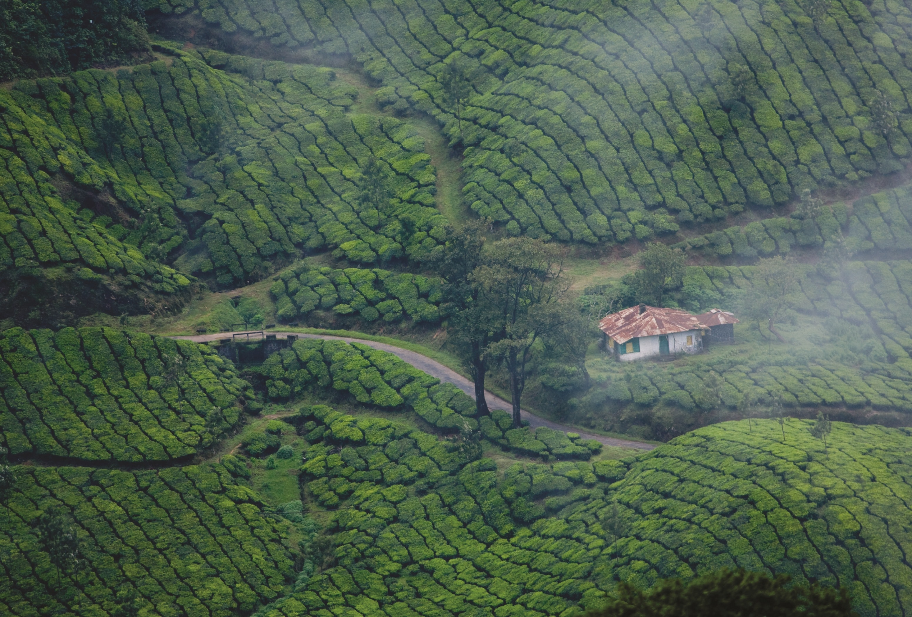

Located in the southwestern tip of India, Thiruvananthapuram is bound by the Arabian Sea in the west and Tamil Nadu in the east. Named after Anantha Padmanabha or Lord Vishnu, the city is home to many ancient temples.
Read More
One of the premier trade capitals of the Old World, Kollam is the centre of the country’s cashew trading and processing industry. This was once a famous port of international spice trade.
Read More
A hilly province of pristine splendour, the district of Pathanamthitta is hailed as the headquarters of pilgrim worship in Kerala. Three rivers course through its prosperous terrains comprising natural divisions of the lowlands, the midlands and the highlands.
Read More
Kottayam district is famous for its rich heritage and literary tradition. It is renowned for its spice and rubber trade. Cradled by the backwaters and the Western Ghats,it is epitomised by its stretches of vast greenery,paddy fields and huge rubberplantations.
Read More
Affectionately nicknamed the 'Venice of the East' by travellers from across the world, Alappuzha is a district of immense natural beauty. Embraced by the Arabian Sea in the west and a network of lakes, lagoons and freshwater rivers criss-crossing it.
Read More
Idukki is Kerala's second largest district and has been blessed with numerous natural wonders. The high valleys and hill ranges of this landlocked region are fed by three major rivers - Periyar, Thalayar and Thodupuzhayar and their tributaries.
Read More
Ernakulam is a sprawling metropolis that beautifully combines its natural wonders with providing a base for a majority of the State’s business enterprises. Flanked by the Arabian sea, it is easily among the most visited locations in Kerala.
Read More
The cultural capital of Kerala, the Poorams or temple festivals in Thrissur draw in thousands of people every single year as these carnivals encapsulate every single part of Kerala's rich heritage.
Read More
Celebrated as the Granary of Kerala, Palakkad is a vast stretch of fertile plains interspersed with hills, rivers, mountain streams and forests. The gateway to Kerala from the north, a 40 kilometre break in the mountains known as the Palakkad Gap.
Read More
Malappuram district has a rich and vibrant history. The military headquarters of the Zamorins of Kozhikode since ancient times, this district was the site for many of the Mappila Revolts (uprising against the British East India Company in Kerala) between 1792 and 1921.
Read More
The legendary seaport where Arab, Chinese and East African traders once converged, Kozhikode was previously the most crucial region of the Malabar Coast. Vasco da Gama landed on its shores in 1498, shooting the region to global fame.
Read More
Wayanad adorns the northern tip of Kerala and is among the few areas in the world that have managed to conserve their natural charm and beauty. Teeming with rare flora and fauna, it is considered among the most picturesque locations in Kerala.
Read More
Kannur is most renowned for the Theyyam performances in its temples. This magnificent art form plays an integral part in the culture of this Northern Kerala district. Formerly known as Cannanore, Marco Polo christened it a ‘Great Emporium Of Spice Trade.
Read More
The northernmost district of Kerala, Kasaragod is renowned for its hills, forts and water bodies. The coir and handloom industry here are extremely famous around the world. The place is also popular for its ancient temples and rich biodiversity.
Read MoreEmail:keralatourism@mail.com
ph:012345677